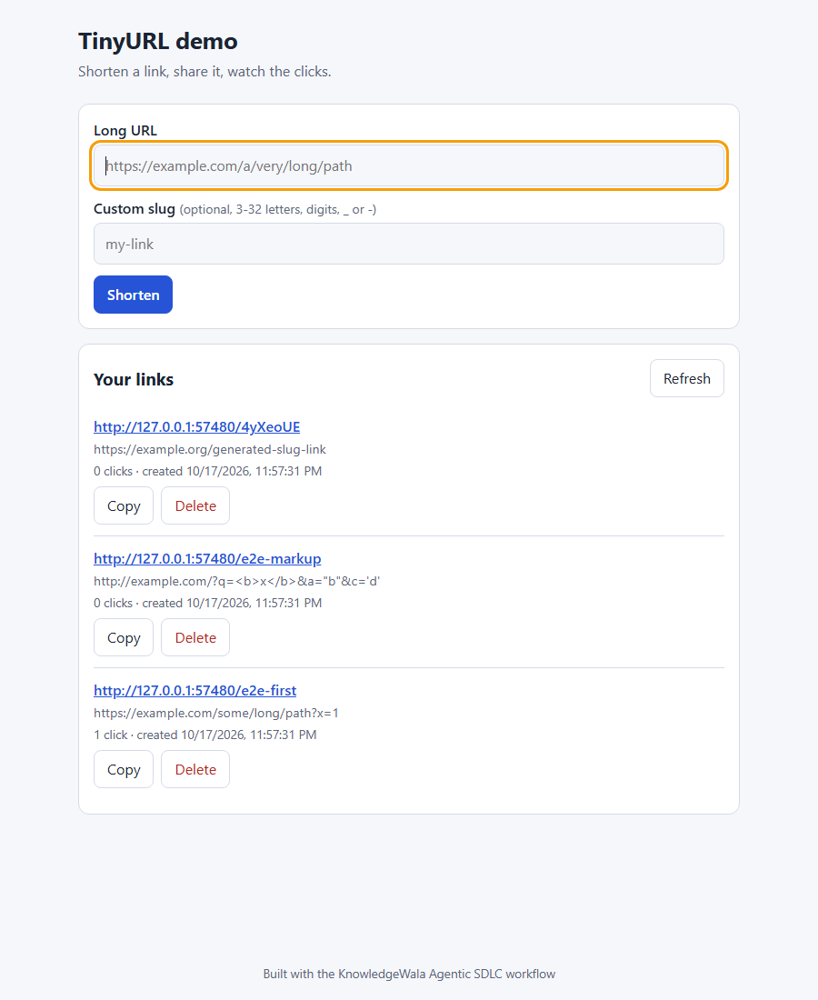

KNOWLEDGEWALAAgentic SDLC
What if the AI that writes your code is never the one that checks it?
An independent review loop for Claude Code.
One big prompt gives you code with no independent review.
One agent writes, tests and approves its own work.
The fix: split the job across 15 focused agents, with human approval gates.
One command, then you approve before any code.
/dev-workflow "your idea"
Requirements and design
Gate: you approve the task plan
BUILD LOOP · MAX 3 ROUNDS
Code
Test · Security · Performance
Review: only the fix list goes back
We used it to build a real app.

Caught: http://a.com@evil.com would have been accepted and sent users to the wrong host.
The honest part: it costs more.
Small change? Use --lite (about 3 calls per task).
One performance "fix" was benchmarked, showed no gain, and was reverted.
Then it writes your deploy guide.
Local and production options for your stack, in DEPLOY.md.
approved: deploy app to local
Nothing starts until you type it.
KnowledgeWala
Open source. MIT licensed.
/plugin marketplace add dharmsahu-hash/knowledgewala-agentic-sdlc
Follow KnowledgeWala for more AI workflows.